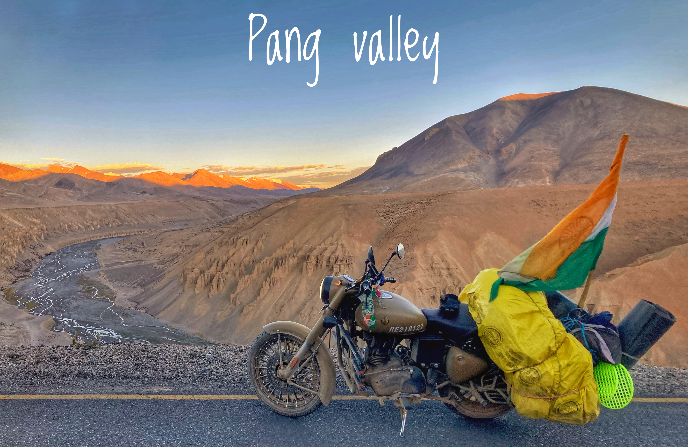

Baralacha LA PASS

Bara-lacha la also known as Bara-lacha Pass, or Bārā Lācha La,(el. 4,850 m or 15,910 ft is a high mountain pass in Zanskar range, connecting Lahaul district in Himachal Pradesh to Leh district in Ladakh. The Leh–Manali Highway traverses the pass. View of Bara-lacha La Top during Monsoon with melting snow. The two headwaters of the Chenab River, Chandra and Bhaga, originate near the Baralacha Pass. The Bhaga river originates from Surya taal lake, which is situated a few of kilometers from the pass towards Manali. The Chandra originates from glacier in this region.[4] The native name of Chenab, "Chandrabhaga", represents the union of Chandra and Bhaga rivers downstream. The pass also acts as a water-divide between the Bhaga river and the Yunam river
Pang Valley
The principal factor that makes Pang a significant place is the highest army transit camp existing at an altitude of 15640 meters above the sea level. It is arranged as a camping option for the army personnel who will travel through this route between the regions bordering Pakistan and China. Numerous tented accommodation options and food from the tea stalls on the road are really helpful to those adventure travelers and trekkers. The rough, uneven plains on the both sides of the village make the sights awesomely jaw-dropping.
Gata Loops

This roller coaster ride is a series of 22 hairpin bends that takes you to the top of Nakeela La. Its many twists, turns and narrows can pose a challenge to even the most experienced drivers. It is considered as one of the tourist attractions of the Leh Manali Highway. These loops are said to be haunted by the ghost of a dead trucker. The road is not easy, though. Up, down, right, left all the time. The loops are 10.3 km and each loop is between 300-600 meters. The longest loops are the last two ones being 800 meters and a kilometer and a half respectively. The angularly elevated roads facilitate passage by loaded trucks. There are shortcuts across the loops but only small vehicles can pass through them.